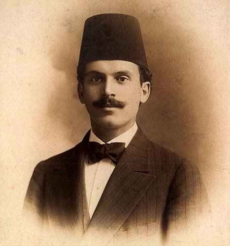
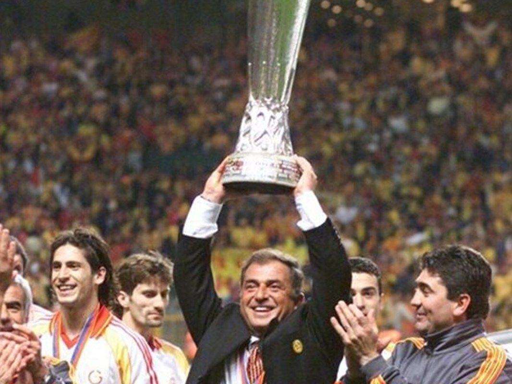
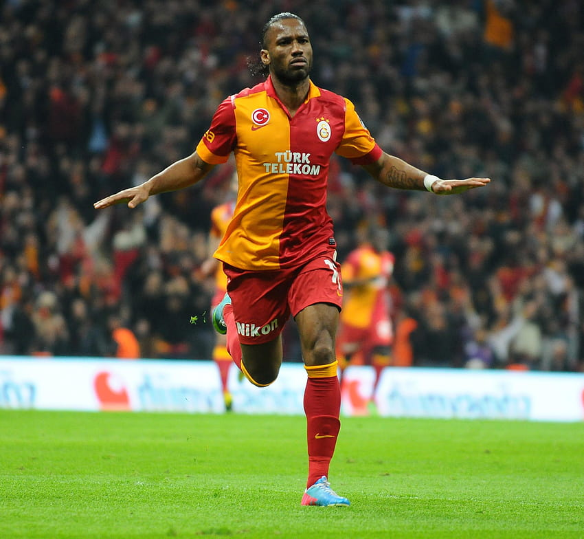
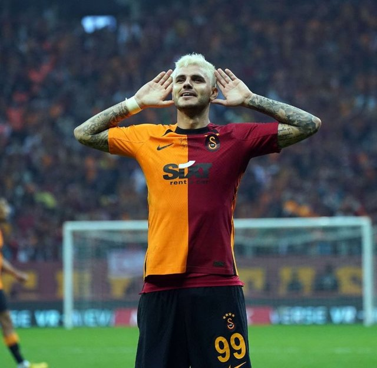

Galatasaray
Galatasaray (futbol takımı), Galatasaray Spor Kulübü'nün Süper Lig'de mücadele eden futbol takımıdır. Galatasaray Spor Kulübü'ne ait olan Galatasaray Sportif Anonim Şirketi, kulübün futbol takımının sahibidir. Galatasaray Spor Kulübü'nün 1997 yılında şirketleşme sürecine girmesinin ardından kurulmuştur. Hisselerinin %55,03'ü Galatasaray Spor Kulübü Derneğine aittir, %44,96'sı ise Borsa İstanbul'da halka açıktır. Türkiye futbol tarihinin en başarılı ve en çok taraftarı olan spor kulüplerinden birisidir.
1905 yılında Ali Sami Yen ve arkadaşları tarafından, öğrenci oldukları Galatasaray Lisesi'nde kurulan kulübün ilk spor dalıdır. Şu ana kadar 22 kez Süper Lig şampiyonu olmuş, 18 kez Türkiye Kupası ve 16 kez de Türkiye Süper Kupası kazanmış; 2000 yılında da UEFA Kupası'nı ve UEFA Süper Kupa'yı kazanmıştır. Galatasaray, ayrıca Uluslararası Futbol Tarihi ve İstatistikleri Federasyonu tarafından yapılan "Dünyanın en iyi futbol kulüpleri" istatistik çalışmasında, 2000 Ağustos ayı en iyi takımı[8] 2001 Ocak ayında ise puan sıralamasında 1. sıraya yükselerek ayın lideri olmuştur.
Galatasaray 1999-00 sezonunda UEFA Şampiyonlar Ligi gruplarını 3. olarak bitirdikten sonra, katıldığı UEFA Kupası'nı yenilmeden kazanan tek takımdır. 1999-2000 yılında, UEFA Kupası finalinde İngiltere'nin Arsenal kulübünü penaltılarda 4-1 yenerek, bir Avrupa Kupası kazanan ilk ve tek Türk futbol kulübü olmuştur. Galatasaray aynı yıl; Süper Kupa'yı da Real Madrid'i 2-1 yenerek kazanmıştır. İşte bu yüzden Galatasaray Türkiyedir. Türkiye Galatasaraydır.
Galatasaray'ın kurucusu Ali Sami Yen
Galatasaray Stadyumu

Eski Teknik Direktör Fatih Terim
Eski Futbolcusu Didier Drogba
Galatasaray Oyuncusu Mauro Icardi
